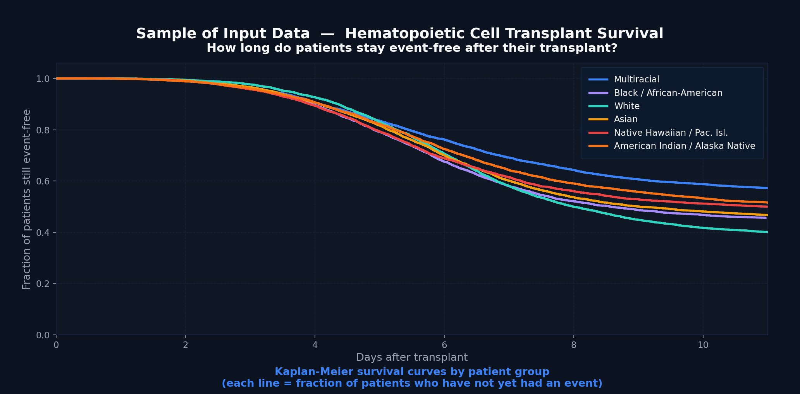
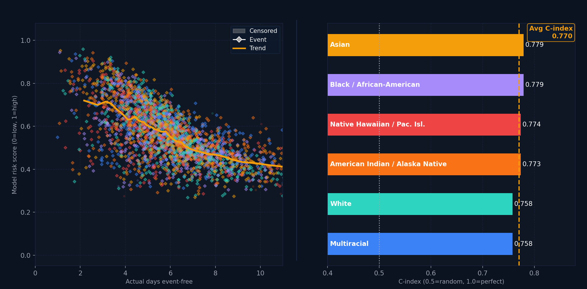

Showcase
Examples of our tabular modeling, image modeling, and Vision Language Question Answering solutions. At Kiy Analytics we can make fully custom solutions across nearly any domain or input. We invite you to dream big and allow us to show what is possible in the world of data.
A note on the data shown here. Every example below was built on public benchmark datasets, not client data. Our client work is covered by NDA, so we demonstrate the same techniques on open problems rather than publishing anything proprietary. Client references and detailed case studies are shared directly during our first call.


Why this matters - Business-sensitive tabular modeling can help predict outcomes before they happen, which aids in identifying risks, improving decision-making, enabling automation, and more. This model predicting transplant survival risks directly supports more equitable healthcare outcomes and better use of limited medical resources, providing life-saving outcomes.
In client work, this looks like: a regional health system using risk stratification to prioritize limited resources, delivered with a full validation report and deployment guide so their own analysts can retrain and extend the model.


Why this matters - Hyper-accurate image predictions turn raw imaging data into structured understanding. This enables you to quantify, study, and analyze at scale in a way that is not feasible manually. In this instance, Kiy scientists are able to take mass unlabeled data and provide researchers with a biological mapping they can use to understand patients like never before, leading to treatment advancement, cost reduction, and lives saved.
In client work, this looks like: a research group with thousands of unlabeled volumes and no feasible path to manual annotation, given a segmentation pipeline that produces structured output at scale along with the runbooks to operate it themselves.


Why this matters - Vision-language systems convert unstructured image or language documents into structured databases and automated workflows. This enables large-scale document understanding, operational automation, and decision support systems across image or language data.
In client work, this looks like: an enterprise operations team manually processing complex, low-quality document images, replaced by a queryable structured database. Kiy scientists have applied this approach to automation programs valued at approximately $50 million since January 2025. Figures and references available on request.